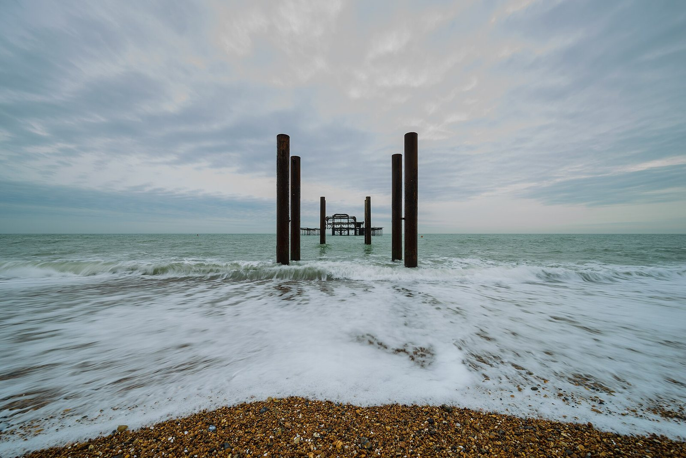

View 30 of 66
The latest damaged view of the pier, No. 30
Originally: West Pier March 2017 01 by Arild Vågen, Taken on 3 March 2017
Condition report (2017): less pier than the last view. More sea.
- Artist
- Arild Vågen
- Original title
- West Pier March 2017 01
- Source
- Wikimedia Commons
- Licence
- CC BY-SA 4.0